Subsections
A float-vector is a simple vector whose elements are specialized to
floating point numbers.
A float-vector can be of any size.
When result is specified in an argument list,
it should be a float-vector that holds the result.
float-vector &rest numbers [function]
-
-
makes a new float-vector whose elements are numbers.
Note the difference between (float-vector 1 2 3) and #F(1 2 3).
While the former create a vector each time it is called, the latter
does when it is read.
float-vector-p obj [function]
-
-
returns T if obj is a float-vector.
v+ fltvec1 fltvec2 &optional result [function]
-
-
adds two float-vectors.
v- fltvec1 &optional fltvec2 result [function]
-
-
subtract float-vectors. If fltvec2 is omitted, fltvec1 is negated.
v. fltvec1 fltvec2 [function]
-
- computes the inner product of two float-vectors.
v* fltvec1 fltvec2 &optional result [function]
-
-
computes the outer product of two float-vectors.
v.* fltvec1 fltvec2 fltvec3 [function]
-
-
computes the scaler triple product [A,B,C]=(V. A (V* B C))=(V. (V* A B) C).
v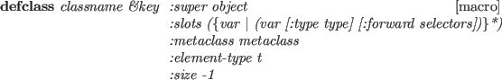 fltvec1 fltvec2 [function]
-
-
returns T if every element of fltvec1 is smaller than
the corresponding element of fltvec2.
v fltvec1 fltvec2 [function]
fltvec1 fltvec2 [function]
-
-
returns T if every element of fltvec1 is larger than
the corresponding element of fltvec2.
vmin &rest fltvec [function]
-
-
finds the smallest values for each dimension in fltvec,
and makes a float-vector from the values.
Vmin and vmax are used to find the minimal bounding box
from coordinates of vertices.
vmax &rest fltvec [function]
-
-
finds the greatest values for each dimension in fltvec,
and makes a float-vector from the values.
minimal-box v-list minvec maxvec [err] [function]
-
-
computes the minimal bounding box for a given vertex-list,
and stores results in minvec and maxvec.
If a floating number err is specified, the minimal box is grown
by the ratio, i.e. if the err is 0.01, each element of minvec is decreased
by 1% of the distance between minvec and maxvec,
and each element of maxvec is increased by 1%.
Minimal-box returns the distance between minvec and maxvec.
scale number fltvec &optional result [function]
-
-
the scaler number is multiplied to the every element of fltvec.
norm fltvec [function]
-
-
norm2 fltvec [function]
-
-
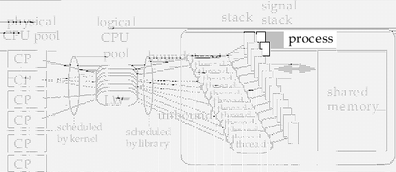
normalize-vector fltvec [result] [function]
-
-
normalizes fltvec to have the norm 1.0.
distance fltvec1 fltvec2 [function]
-
-
returns the distance
 between two float-vectors.
between two float-vectors.
distance2 fltvec1 fltvec2 [function]
-
-
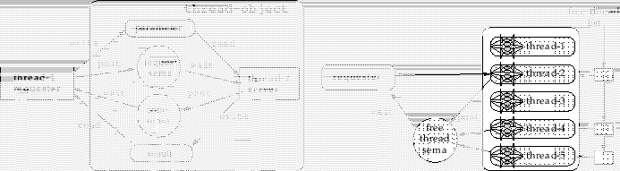
homo2normal homovec &optional normalvec [function]
-
-
A homogeneous vector homovec is converted to its normal representation.
homogenize normalvec &optional homovec [function]
-
-
A normal vector normalvec is converted to its homogenous representation.
midpoint p p1 p2 &optional result [function]
-
-
P is float, and p1 and p2 are float-vectors of the same
dimension.
A point
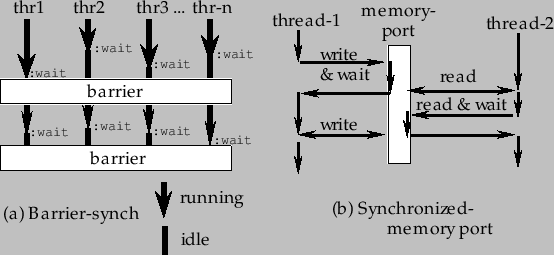, which is the point
that breaks p1-p2 by the ratio
 , is returned.
, is returned.
rotate-vector fltvec theta axis &optional result [function]
-
-
rotates 2D or 3D fltvec by theta radian around axis.
Axis can be one of :x, :y, :z, 0, 1, 2 or NIL.
When axis is NIL, fltvec is taken to be two dimensional.
To rotate a vector around an arbitrary axis in 3D space,
make a rotation matrix by the rotation-matrix function and
multiply it to the vector.
A matrix is a two-dimensional array whose elements are all floats.
In most functions a matrix can be of any size,
but the v*, v.*, Euler-angle and rpy-angle functions
can only handle three dimensional matrices.
Transform, m* and transpose do not restrict
the matrices to be square,
and they operate on general n*m size matrices.
Functions that can accept result parameter
places the computed result there, and no heap is wasted.
All matrix functions are intended for the transformation in the normal
coordinate systems, and not in the homogeneous coordinates.
The rpy-angle function decomposes a rotation matrix into three components
of rotation angles around z, y and x axes of the world coordinates.
The Euler-angle function is similar to rpy-angle but
decomposes into rotation angles around local z, y and again z axes.
Both of these functions return two solutions since angles can be
taken in the opposite directions.
; Mat is a 3X3 rotation matrix.
(setq rots (rpy-angle mat))
(setq r (unit-matrix 3))
(rotate-matrix r (car rots) :x t r)
(rotate-matrix r (cadr rots) :y t r)
(rotate-matrix r (caddr rots) :z t r)
;--> resulted r is equivalent to mat
To keep track of pairs of a position and a orientation in 3D space, use
the coordinates and cascaded-coords classes
detailed in the section 15.4.
matrix &rest elements [function]
-
-
makes a new matrix from elements.
Row x Col = (number of elements) x (length of the 1st element).
Each of elements can be of any type of sequence.
Each sequence is lined up as a row vector in the matrix.
make-matrix rowsize columnsize &optional init [function]
-
-
makes a matrix of
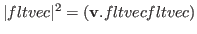.
matrixp obj [function]
-
-
T if obj is a matrix, i.e. obj is a two dimensional array
and its elements are floats.
matrix-row mat row-index [function]
-
-
extracts a row vector out of matrix mat.
matrix-row is also used to set a vector in a particular row
of a matrix using in conjunction with setf.
matrix-column mat column-index [function]
-
-
extracts a column vector out of mat.
matrix-column is also used to set a vector in a particular
column of a matrix using in conjunction with setf.
m* matrix1 matrix2 &optional result [function]
-
-
concatenates matrix1 and matrix2.
transpose matrix &optional result [function]
-
-
transposes matrix, i.e. columns of matrix are exchanged with
rows.
unit-matrix dim [function]
-
-
makes an identity matrix of dim
 dim.
dim.
replace-matrix dest src [function]
-
-
replaces all the elements of dest matrix with ones of src matrix.
scale-matrix scalar mat [function]
-
-
multiplies scaler to all the elements of mat.
copy-matrix matrix [function]
-
-
makes a copy of matrix.
transform matrix fltvector &optional result [function]
-
-
multiplies matrix to fltvector from the left.
transform fltvector matrix &optional result [function]
-
-
multiplies matrix to fltvector from the right.
rotate-matrix matrix theta axis &optional world-p result [function]
-
-
multiplies a rotation matrix from the left (when world-p is non-nil)
or from the right (when world-p is nil).
When a matrix is rotated by rotate-matrix,
the rotation axis :x, :y, :z or 0,1,2
may be taken either in the world coordinates or in the local coordinates.
If world-p is specified nil, it means rotation along the
axis in the local coordinate system and the rotation matrix is multiplied
from the right.
Else if worldp is non-nil, the rotation is made in the
world coordinates and the rotation matrix is multiplied from the left.
If NIL is given to axis, matrix should be two dimensional and
the rotation is taken in 2D space where world-p does not make sense.
rotation-matrix theta axis &optional result [function]
-
-
makes a 2D or 3D rotation matrix around axis which can be any of
:x, :y, :z, 0, 1, 2, a 3D float-vector or NIL.
When you make a 2D rotation matrix, axis should be NIL.
rotation-angle rotation-matrix [function]
-
-
extracts a equivalent rotation axis and angle from rotation-matrix
and a list of float and float-vector is returned.
NIL is returned when rotation-matrix is a unit-matrix.
Also if the rotation angle is too small, the result may have errors.
When rotation-matrix is 2D, the single angle value is returned.
rpy-matrix ang-z ang-y ang-x [function]
-
-
makes a rotation matrix defined by roll-pitch-yaw angles.
First, a unit-matrix is rotated by ang-x radian along X-axis.
Next, ang-y around Y-axis and finally ang-z around Z-axis.
All the rotation axes are taken in the world coordinates.
rpy-angle matrix [function]
-
-
extracts two triplets of roll-pitch-yaw angles of matrix.
Euler-matrix ang-z ang-y ang2-z [function]
-
-
makes a rotation matrix defined by three Euler angles.
First, a unit-matrix is rotated ang-z around Z-axis, next, ang-y
around Y-axis and finally ang2-z again around Z-axis.
All the rotation axes are taken in the local coordinates.
Euler-angle matrix [function]
-
-
extracts two tuples of Euler angles.
lu-decompose and lu-solve are provided to solve
simultaneous linear equations.
First, lu-decompose decomposes a matrix into a lower triangle matrix
and an upper triable matrix.
If the given matrix is singular, LU-decompose returns NIL, otherwise
it returns the permutation vector which should be supplied to LU-solve.
Lu-solve computes the solution for a LU matrix with a given constant vector.
This method is efficient if solutions for many combinations
of different constant vectors and the same factor matrix are required.
Simultaneous-equation would be more handy when you wish to get
only one solution.
Lu-determinant computes a determinant of a lu-decomposed matrix.
Inverse-matrix function computes an inverse matrix using lu-decompose
once, and lu-solve n times.
Computation time for a 3*3 matrix is estimated to be 4 milli-sec.
lu-decompose matrix &optional result [function]
-
-
performs lu-decomposition of matrix.
lu-solve lu-mat perm-vector bvector [result] [function]
-
-
solves a linear simultaneous equations which has already been lu-decomposed.
perm-vector should be the result returned by lu-decompose.
lu-determinant lu-mat perm-vector [function]
-
-
computes the determinant value for a matrix which has already been
lu-decomposed.
simultaneous-equation mat vec [function]
-
-
solves a linear simultaneous equations whose coefficients are described in
mat and constant values in vec.
inverse-matrix mat [function]
-
-
makes the inverse matrix of the square matrix, mat.
pseudo-inverse mat [function]
-
-
computes the pseudo inverse matrix using the singular value decomposition.
Coordinates
Coordinate systems and their transformations are represented by
the coordinates class.
Instead of 4*4 (homogeneous) matrix representation,
coordinate system in EusLisp is represented by a combination of
a 3*3 rotation matrix and a 3D position vector
mainly for speed and generality.
coordinates [class]
:super propertied-object
:slots (pos :type float-vector
rot :type array)
-
- defines a coordinate system with a pair of a position vector and a 3x3
rotation matrix.
coordinates-p obj [function]
-
-
returns T when obj is an instance of coordinates class or its subclasses.
:rot [method]
-
-
returns the 3X3 rotation matrix of this coords.
:pos [method]
-
-
returns the 3-D position vector of this coords.
:newcoords newrot &optional newpos [method]
-
-
updates the coords with newrot and newpos. Whenever a condition that changes
the state of this coords occurs,
this method should be called with the new rotation
matrix and the position vector.
This message may invoke another :update method to propagate the event.
If newpos is not given, newrot is given as a instance of coordinate class.
:replace-coords newrot &optional newpos [method]
-
-
changes the rot and pos slots to be updated without calling newcoords method.
If newpos is not given, newrot is given as a instance of coordinate class.
:coords [method]
-
-
:copy-coords &optional dest [method]
-
-
If dest is not given, :copy-coords makes another coordinates object
which has the same rot and pos slots. If dest is given, rot and pos of
this coordinates is copied to the dest coordinates.
:reset-coords [method]
-
-
forces the rotation matrix of this coords to be identity matrix, and pos
vector to be all zero.
:worldpos [method]
-
-
:worldrot [method]
-
-
:worldcoords [method]
-
-
Computes the position vector, the rotation matrix and the coordinates
of this object represented in the world coordinates. The coordinates class
is always assumed to be represented in world, these method can simply return
pos, rot and self. These methods are provided for the compatibility with
cascaded-coords class which cannot be assumed to be represented in world.
:copy-worldcoords &optional dest [method]
-
-
First, worldcoords is computed, and it is copied to dest. If no dest
is specified, a coordinates object to store the result is newly created.
:rotate-vector vec [method]
-
-
A vector is rotated by the rotation of this coords, i.e., an orientation
vector represented in this coords is converted to the representation
in the world.
The position of this coords does not affect rotation.
:transform-vector vec [method]
-
-
A vector in this local coords is transformed to the representation in the world.
:inverse-transform-vector vec [method]
-
-
A vector in the world is inversely transformed to the representation in this
local coordinate system.
:transform trans &optional (wrt :local) [method]
-
-
Transform this coords by the trans represented in wrt coords.
Trans must be of type coordinates, and wrt must be one of keywords
:local, :parent, :world or an instance of coordinates.
If wrt is :local, the trans is applied from the right to this coords,
and if wrt is :world or :parent,
the trans is multiplied from the left.
Else, if wrt is of type coordinates, the trans represented in the wrt
coords is first transformed to the representation in the world, and it
is applied from the left.
:move-to trans &optional (wrt :local) [method]
-
-
Replaces the rot and pos of the coords with trans represented in wrt.
:translate p &optional (wrt :local) [method]
-
-
changes the position of this object
relatively with respective to wrt coords.
:locate p &optional (wrt :local) [method]
-
-
Changes the location of this coords with the parameter represented in wrt.
If wrt is :local, then the effect is identical to
:translate with wrt=:local.
:rotate theta axis &optional (wrt :local) [method]
-
-
Rotates this coords relatively by theta radian around the axis.
Axis is one of axis-keywords (:x, :y and :z) or an arbitrary float-vector.
Axis is considered to be represented in the wrt coords.
Thus, if wrt=:local and axis=:z,
the coordinates is rotated around the z
axis of this local coords, and wrt=:world or :parent,
the coords is rotated around the z axis of world coords.
In other words, if wrt=:local,
a rotation matrix is multiplied from the right of this coords,
and if wrt=:world or :parent,
a rotation matrix is multiplied from the left.
Note that even wrt is either :world or :parent,
the pos vector of this coordinates does not change.
For the true rotation around the world axis,
an instance of coordinates class representing the
rotation should be given to :transform method.
:orient theta axis &optional (wrt :local) [method]
-
-
forces setting rot.
This is an absolute version of :rotate method.
:inverse-transformation [method]
-
-
makes a new coords that is inverse to self.
:transformation coords (wrt :local) [method]
-
-
makes the transformation (an instance of coordinates) between this coords
and the coords given as the argument.
If wrt=:local,
the result is represented in local coords,
i.e., if the resulted transformation is given
as an argument to :transform with wrt=:local,
this coords is transformed
to be identical with the coords.
:Euler az1 ay az2 [method]
-
-
sets rot with Euler angles, that are,
rotation angles around z (az1,
y (ay) and again z az2 axis of
this local coordinates system.
:roll-pitch-yaw roll pitch yaw [method]
-
-
sets rot with roll-pitch-yaw angles:
rotation angles around x (yaw), y (pitch) and z (roll)
axes of the world coordinate system.
:4x4 &optional mat44 [method]
-
-
If a matrix of 4x4 is given as mat44,
it is converted to coordinates representation with a 3x3 rotation matrix and
a 3D position vector.
If mat44 is not given, this coordinates is converted to 4x4
matrix representation.
:init &key :pos #f(0 0 0) [method]
:rot #2f((1 0 0) (0 1 0) (0 0 1))
:rpy roll pitch yaw
:Euler az ay az2
:axis rotation-axis
:angle rotation-angle
:4X4 4x4 matrix
:coords another coordinates
:properties a list of (ind . value) pair
:name name property
-
- initializes this coordinates object and sets rot and pos.
The meaning of each keyword follows:
- :dimension
- 2 or 3 (default is 3)
- :pos
- specifies a position vector (defaulted to #f(0 0 0))
- :rot
- specifies a rotation matrix (defaulted to a unit-matrix)
- :Euler
- gives a sequence of three elements for Euler angles
- :rpy
- gives a sequence of three elements for roll-pitch-yaw
- :axis
- rotation axis (:x,:y,:z or an arbitrary float-vector)
- :angle
- rotation angle (used with :axis)
- :wrt
- where the rotation axis is taken (default is :local)
- :4X4
- 4X4 matrix is used to specify both pos and rot
- :coords
- copies pos and rot from coords
- :name
- set :name property
:Angle can only be used in conjunction with the :axis
that is determined in the :wrt coordinates.
Without regard to :wrt, :Euler always specifies
the Euler angles, az1, ay and az2,
defined in the local coordinates,
and :rpy specifies the angles around
z, y and x axes of the world coordinates.
Two or more of :rot, :Euler, :rpy, :axis and :4X4
cannot be specified simultaneously, although no error is reported.
Sequences can be supplied to the :axis and :angle parameters,
which mean successive rotations around the given axes.
List of pairs of an attribute and its value can be given as :properties
argument. These pairs are copied in the plist of this coordinates.
cascaded-coords [class]
:super coordinates
:slots (parent descendants worldcoords manager changed)
-
- defines a linked coordinates. Cascaded-coords is often abbreviated
as cascoords.
:inheritance [method]
-
-
returns the inheritance tree list describing all the descendants of the
cascoords.
If a and b are the direct descendants of this coords,
and c is a descendant of a, ((a (c)) (b)) is returned.
:assoc childcoords &optional relative-coords [method]
-
-
childcoords is associated to this cascoords as a descendant.
If childcoords has been already assoc'ed to some other cascoords, first
childcoords is dissoc'ed since each cascoords can have only one parent.
The orientation or location of childcoords in the world does not change.
:dissoc childcoords [method]
-
-
dissociates (removes) childcoords from the descendants list of this coords.
The orientation or location of childcoords in the world does not change.
:changed [method]
-
-
informs this coords that the coordinates of parent has changed,
and the re-computation of worldcoords is needed when it is requested later.
:update [method]
-
-
is called by the :worldcoords method
to recompute the current worldcoord.
:worldcoords [method]
-
-
returns a coordinates object which represents this coord in the world
by concatenating all the cascoords from the root to this coords.
The result is held in this object and reused later.
Thus, you should not modify the resulted coords.
:worldpos [method]
-
- returns rot of this coordinates represented in
the world.
:worldrot [method]
-
- returns pos of this coordinates represented in
the world.
:transform-vector vec [method]
-
-
Regarding vec represented in this local coords,
transforms it to the representation in the world.
:inverse-transform-vector vec [method]
-
-
vec represented in the world is inversely transformed into the
representation in this local coords.
:inverse-transformation [method]
-
-
makes an instance of coordinates which represents inverse transformation
of this coord.
:transform trans &optional (wrt :local) [method]
-
-
:translate fltvec &optional (wrt :local) [method]
-
-
:locate fltvec &optional (wrt :local) [method]
-
-
:rotate theta axis &optional (wrt :local) [method]
-
-
:orient theta axis &optional (wrt :local) [method]
-
-
Refer to the descriptions in class coordinates.
make-coords &key :pos :rot :rpy :Euler :angle :axis :4X4 :coords :name [function]
-
-
make-cascoords &key :pos :rot :rpy :Euler :angle :axis :4X4 :coords :name [function]
-
-
coords &key :pos :rot :rpy :Euler :angle :axis :4X4 :coords :name [function]
-
-
cascoords &key :pos :rot :rpy :Euler :angle :axis
:4X4 :coords :name [function]
-
-
All these functions make new coordinates or cascaded-coordinates.
For the keyword parameter, see :init method of class coordinates.
transform-coords coords1 coords2 &optional (coords3 (coords)) [function]
-
-
Coords1 is applied (multiplied) to the coords2 from the left.
The product is stored in coords3.
transform-coords* &rest coords [function]
-
-
concatenates transformations listed in coords.
An instance of coordinates that represents the concatenated transformation
is returned.
wrt coords vec [function]
-
-
transforms vec into the representation in coords.
The result is equivalent to
(send coords :transform-vector vec).
Relationship between transformation matrix and coordinates class is described,
where a transformation matrix T represents a 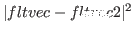(homogeneous) matrix as below.
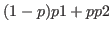
 is a 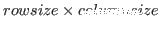 matrix, and
is a 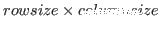 matrix, and
 is a 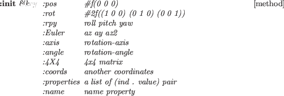 matrix
(a float-vector which has 3 elements in euslisp).
Coordinates class has
slot variables rot and pos. They are
and
respectively.
is a 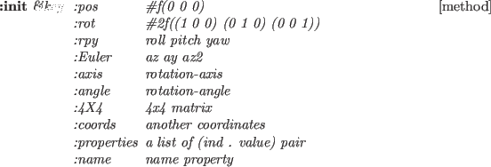 matrix
(a float-vector which has 3 elements in euslisp).
Coordinates class has
slot variables rot and pos. They are
and
respectively.
 and
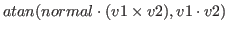 can be obtained using methods of the coordinates class.
and
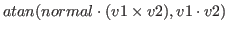 can be obtained using methods of the coordinates class.
T is an instance of the coordinate class.
(send T :rot)
-
-

(send T :pos)
-
-
 is 3-D position vector.
is 3-D position vector.
(send T :rotate-vector
)
-
-

(send T :inverse-rotate-vector
)
-
-

(send T :transform-vector
)
-
-
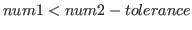
Converts a vector represented in a local coordinate system T
to a vector represented in the world coordinate system.
(send T :inverse-transform-vector
)
-
-
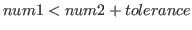
Converts a vector represented in the world coordinate system.
to a vector represented in a local coordinate system T.
(send T :inverse-transformation)
-
-

Returns inverse matrix.
(send T :transformation A (&optional (wrt :local)))
-
-
when wrt == :local, 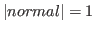 is returned.
when wrt == :world, is returned.
when wrt == W (coordinates class),
 is returned.
is returned.
A is an instance of the coordinates class.
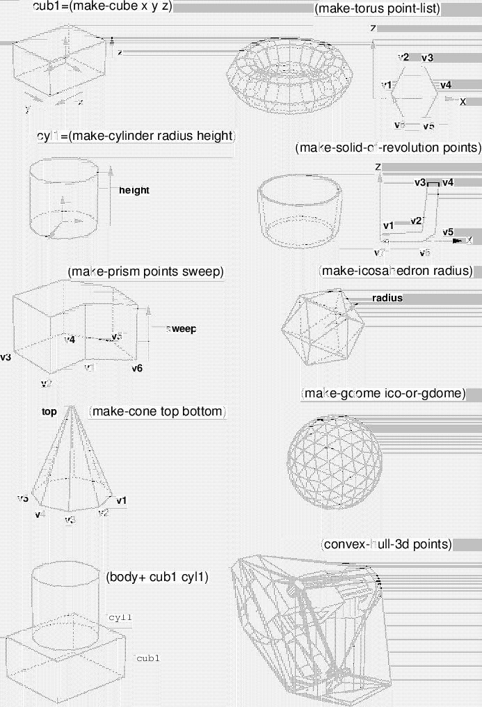 represents that
slot variables (pos or rot) refer to a given instance (matrix or float vector).
Please note that when one is changed, the other also reflects the change.
 represents substitution.
represents substitution.
(send T :newcoords A)
-
-


(send T :newcoords
)
-
-


(send T :move-to A (&optional (wrt :local)))
-
-
when wrt == :local,

when wrt == :world,

when wrt == W (coordinates class),

(send T :translate
(&optional (wrt :local)))
-
-
when wrt == :local,
when wrt == :world,

when wrt == W (coordinates class),
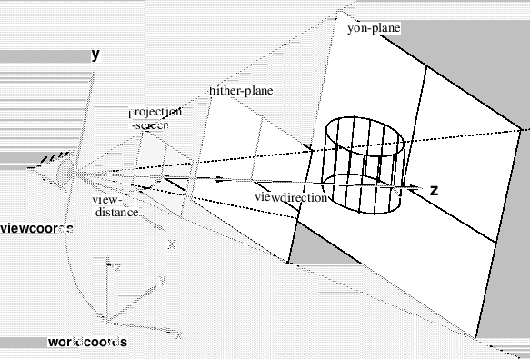
(send T :locate
(&optional (wrt :local)))
-
-
when wrt == :local,
when wrt == :world,
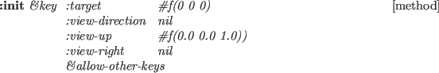
when wrt == W (coordinates class),
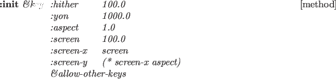
(send T :transform A (&optional (wrt :local)))
-
-
when wrt == :local,
when wrt == :world,
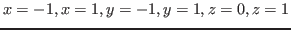
when wrt == W (coordinates class),
Travis CI User
2017-03-07